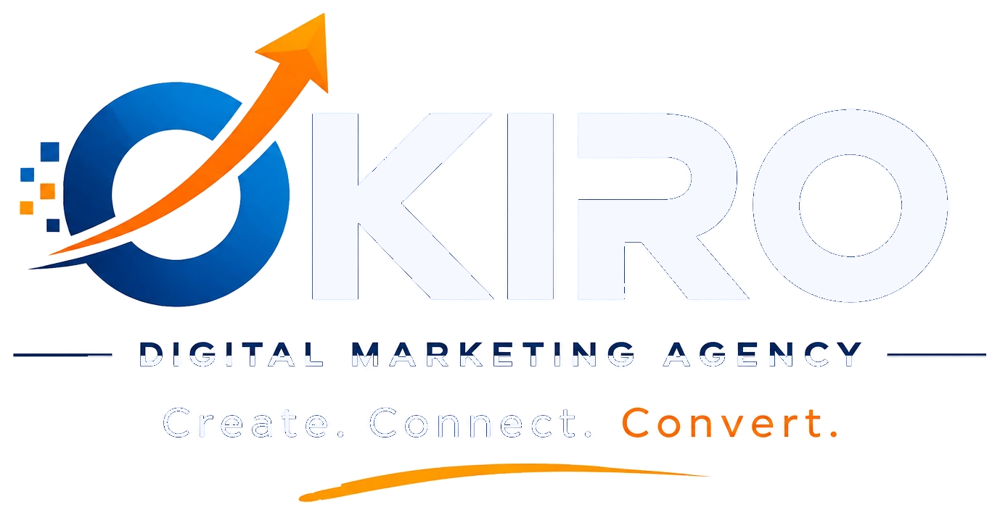
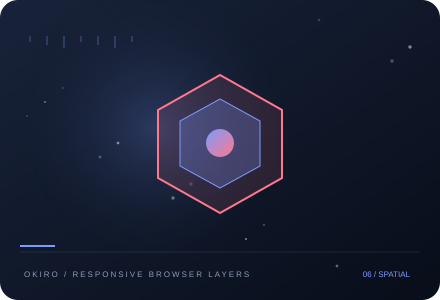

Understand
Review your goals, audience, current activity and constraints.

Let's Talk ↗Create responsive websites and landing pages that communicate clearly, load efficiently and guide visitors toward useful actions. We consider information structure, accessibility, mobile layouts and conversion paths from the start.
Discuss this service ↗
OKIRO / WEBCreate responsive websites and landing pages that communicate clearly, load efficiently and guide visitors toward useful actions. We consider information structure, accessibility, mobile layouts and conversion paths from the start. We work with you to define priorities, align the right activities and make the next step clear. The exact scope depends on your audience, current setup and objectives.
We keep the process collaborative and transparent, with decisions tied to the goals you set together.
Review your goals, audience, current activity and constraints.
Agree the plan, deliverables, tracking and responsibilities.
Review the signals, share what we learn and refine the next move.
Tell us what you want to achieve and we’ll discuss a sensible starting point.